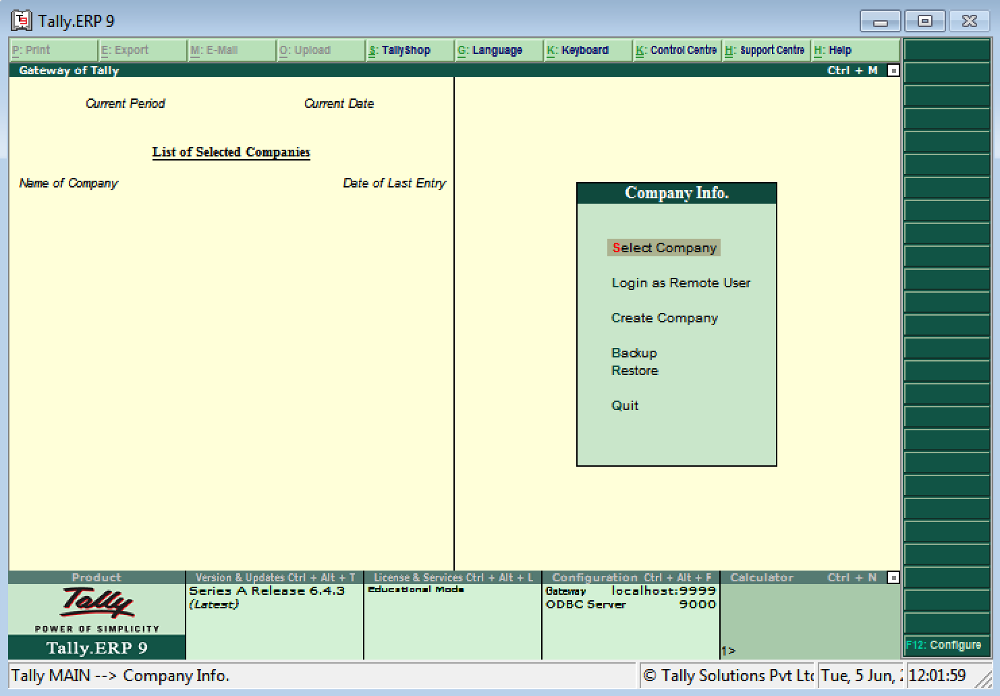
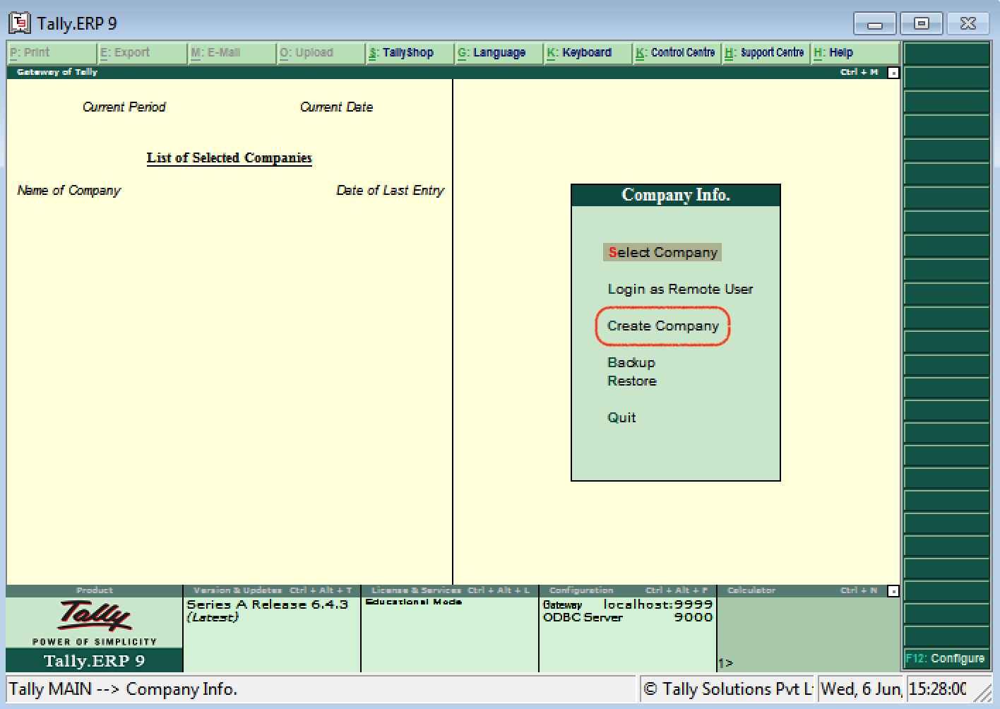
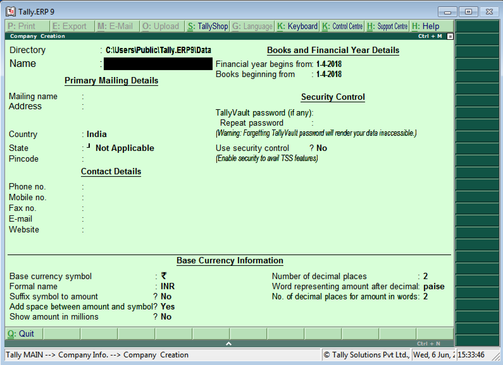

what is Tally :
Tally is an ERP accounting software package used for recording day to day business data of a company. The latest version of Tally is Tally ERP 9.
Tally ERP 9 Software is one acclaimed financial accounting system and inventory management system with power computer.
Tally.ERP 9 is one best accounting software that can integrated with other business applications such as Sales, finance, Purchasing, Payroll, Inventory, etc.
Features of Tally
- Tally ERP 9 supports multi languages, so it is called as multi-lingual tally software. Accounts can be maintained in one language and reports can be viewed in another language.
- You can create and maintain accounts up to 99,999 companies.
- Using payroll feature, you can automate employee records management.
- Tally has feature of synchronization, the transactions maintained in multiple locations offices can be automatically updated.
- Generate consolidated financial statements as per requirements of company.
- Managing single and multiple groups are very important features of tally.
Versions of Tally
- The first version of Tally was Tally 4.5 and it was released in 1990’s. It is a MS-Dos based software.
- The second version of Tally was Tally 5.4 and it was released in 1996. It was a graphic interface versions.
- The next version of Tally was Tally 6.3 and this Tally version was released in 2001. It is a window based version and supports in printing and implemented with VAT (Value Added Tax).
- The next version of Tally was Tally 7.2 and it was released in 2005. This version was added with a new features of Statutory complimentary version and VAT rules as per state wise.
- The next version of Tally was Tally 8.1 and it was developed with a new data structure. This version was added with new features of POS (Point Of Sale) and Payroll.
- The next version of Tally was Tally 8.1 and it was developed with a new data structure. This version was added with new features of POS (Point Of Sale) and Payroll.
- Tally.ERP 9 is the latest version of Tally and released in 2009. This latest Tally ERP 9 package offering maximum features for small business industries to large business industries. It also updated with new features of GST (Goods & Services Tax).
Advantages of Tally ERP 9
- Tally ERP 9 software is a low cost of ownership and it can be easily implement and customize.
- Supports multi operating systems such as Windows & Linux and can be installed on multiple systems.
- Tally software utilizes very low space for installation and the installation of tally is an easy method.
- It is built in back up and restore, so the user can easily backup all companies data in a single directory, in a local system disk.
- Supports all types of protocols such as HTTP, HTTPS, FTP, SMTP, ODBC, etc.
- Supports multi languages including 9 Indian language. The data can be entered in one language and you can generate invoices, Po’s, delivery notes, etc in other language.
Tally Screen Components :
Tally Screen Components – After you startup the Tally ERP 9 Application, the welcome home screen of Tally ERP 9 – Power of Simplicity displays on the screen during the Tally software loading on compute system.
The home screen of Tally ERP 9 contains the following components
- Title Bar
- Horizontal Button Bar
- Close Button
- Gateway of Tally
- Buttons Toolbar
- Calculator area
- Info Panel
- Data and Time

How to create company in Tally ERP 9
Step 1: After login to Tally, double click on the option create company under company information. To create company in Tally, follow the following navigation path Gateway of Tally > Company Info > Create company
Step 2: The company creation window displays on the screen as show below image
Note: Use the enter key or Tab key or Arrow key or Mouse to navigation between the fields in Tally.
Step 3: On company creation screen, update the following details
- Directory: It is a path where the company date will be stored on system. By default, the tally directory will updated as C:\Users\Public\Tally.ERP9\Data and you can change the path as per your requirements.
- Name: Update the name of company that identifies in Tally ERP 9.
Primary Mailing Details
- Mailing Name:The mailing name of company will be automatically updated as per the given name of company, however the mailing name can be changed as per the requirements.
- Address: Update the complete address details of company
- Statutory Compliance for: Choose the country name as India from the given list of countries.
- State: Choose the state from the given list of states.
- Pin Code: Update the Pin Code of company, where it is located.
Contact Details
-
Telephone No: Update Company landline/ Telephone number
/li>E-Mail: Update the company e-mail id
- Mobile No: Mobile number for contacting
- Fax no: Update the Fax number
- Website: Update the official website address of company
Books and Financial Year Details
- Financial Year From: Update the financial year starting date, all Indian companies financial year start from 1st April and ends on 31st March. Tally considers the 12 months from the date given for financial year. The financial year will be automatically displayed on Tally system, if FY starts in middle of year, you can specify the exact date from here.
- Books Beginning from: Specify the books beginning date.
Security Control
- Tally Vault Password: By enabling Tally vault password, the company data is secured in an encrypted form. The data is not accessible without the password, if you lost the password that will be not recovered.
- Use Security Control: Enabling securing control helps only authorized users are allowed to enter/edit/delete the vouchers on Tally.
Base Currency Information
- Base Currency Symbol: [icon name=”inr” class=”” unprefixed_class=””] Formal Name: INR (India Rupees
- Suffix Symbol to Amount: No
- Add spaces between the amount and symbol: Yes
- Show amount in Millions: Yes
- Number of decimal Places: 2
- Word representing amount after decimal: Paisa
- No of decimal places for amount in words: 2